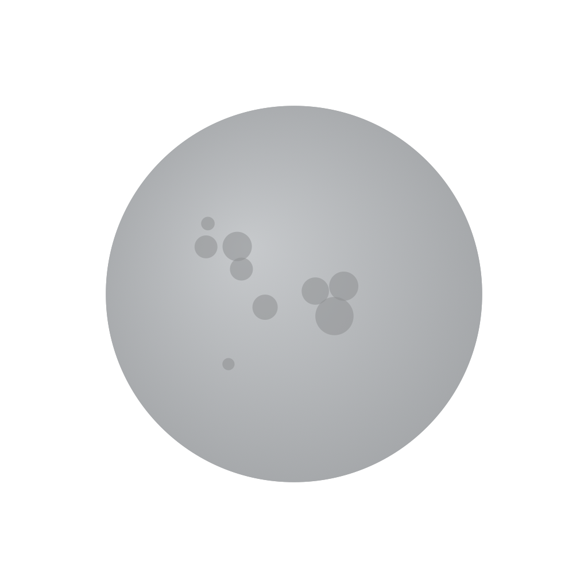
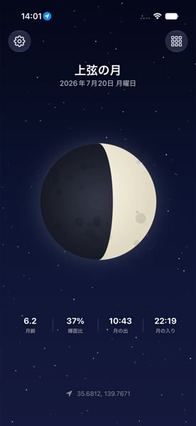

月探し (Search Moon)
子供と月を探したい・今日はどんな月が見れる？を簡単にチェック
「月探し」は、GPS位置情報と日付から今日の月の状態（月齢・輝面比・月の出/月の入り時刻）を計算して表示するiOSアプリです。コンパスと仰角ゲージで、今どちらを向けば空にある月に合うかもリアルタイムにわかるので、お子さんと一緒に空を見上げて月を探すときにも役立ちます。
- 🌙 今日の月現在地と日付から、月齢・輝面比・月の出/月の入り時刻を計算します。
- 🧭 月を探すコンパスと仰角ゲージで、空のどこに月があるかをリアルタイムに案内します。
- 🖼 全月齢ギャラリー1周期ぶんの月相を一覧で確認でき、次にいつ見られるかもわかります。



プライバシーポリシー
PRIVACY日本語
最終更新日: 2026年8月22日
本アプリ「月探し（Search Moon）」（以下「本アプリ」）は、GPS位置情報と日時から月の状態（月齢・輝面比・月の出/月の入り時刻・方位）を計算して表示するiOSアプリです。皆さまに安心してお使いいただけるよう、本アプリが取り扱う情報についてわかりやすくご説明します。
取得する情報
- 位置情報（GPS座標）: 現在地の月の出/月の入り時刻・方位角・仰角を計算するために使用します。
- 方位・モーションセンサー（コンパス/ジャイロ）: 「月を探す」画面で端末が向いている方向・角度を判定するために使用します。
情報の取り扱い
- 取得した位置情報・センサー情報は、いずれも端末内でのみ計算に使用され、外部のサーバーへ送信・保存されることはありません。
- 本アプリは広告SDK・アクセス解析SDK・トラッキング目的のライブラリを一切使用していません。
- 設定画面での表示設定など、一部の情報は端末内（UserDefaults）にのみ保存され、外部と共有されることはありません。
第三者への提供
本アプリは、取得した情報を第三者に提供・販売することはありません。
お子様のプライバシーについて
本アプリは個人を特定できる情報を取得・保存しないため、年齢を問わずご利用いただけます。
本ポリシーの変更
本ポリシーの内容は、本アプリの機能追加・変更に伴い予告なく更新される場合があります。変更後の内容は本ページに掲載した時点で効力を生じるものとします。
お問い合わせ
albites@proton.me
English
Last updated: August 22, 2026
"Search Moon" (the "App") is an iOS app that calculates and displays the current moon's status (moon age, illumination, moonrise/moonset times, azimuth) based on your GPS location and the current date. This policy explains, in plain language, how the App handles your information so you can use it with peace of mind.
Information We Collect
- Location data (GPS coordinates): Used to calculate moonrise/moonset times, azimuth, and elevation for your current location.
- Compass / motion sensor data: Used on the "Find the Moon" screen to determine which direction and angle your device is pointing.
How Information Is Used
- All location and sensor data is processed entirely on your device and is never transmitted to or stored on any external server.
- The App does not use any advertising SDK, analytics SDK, or tracking library.
- Display preferences are stored locally on your device (UserDefaults) and are never shared externally.
Sharing with Third Parties
The App does not share or sell any collected information to third parties.
Children's Privacy
Since the App does not collect any personally identifiable information, it may be used by users of any age.
Changes to This Policy
This policy may be updated without prior notice as the App's features change. Any changes take effect as soon as they are posted on this page.
Contact
albites@proton.me